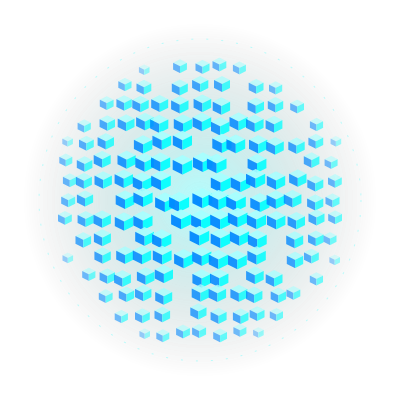

Un compañero de IA
en tu escritorio
El usuario elige el modelo. Núcleo aporta las herramientas, los permisos y la confirmación de cada cambio en sus archivos.

De la petición al resultado
Escribes o dictas
Chat con memoria configurable. El dictado actual usa un proveedor de nube compatible.
Núcleo identifica la tarea
Un comando directo puede resolverse sin consultar al modelo. Las demás peticiones van al chat elegido.
Local o nube
Si admite herramientas, puede solicitar una función del catálogo. Si las rechaza, quedan los comandos directos.
Permisos y argumentos
Núcleo acepta funciones conocidas y una acción nativa por turno. El modelo no obtiene acceso libre a comandos.
Revisas y confirmas
Buscar archivos y abrir apps piden permiso. Los movimientos muestran primero un plan con sus rutas.
La app informa lo ocurrido
Las acciones de archivos tienen registros locales y deshacer. Los fallos se muestran sin fingir éxito.
Seis herramientas disponibles
Buscar en internet
Extractos y enlaces de buscadores públicos. Puede activarse desde la pregunta; «sin internet» la omite.
core_search_webEncontrar archivos
Por nombre o extensión en las carpetas habituales. Búsqueda rápida y limitada; sin leer el contenido.
core_find_filesReunir resultados
Los archivos de la última búsqueda pueden ir a una nueva carpeta del Escritorio, tras revisar el plan.
core_group_resultsDeshacer agrupación
Prepara la restauración de archivos a sus ubicaciones originales. Requiere confirmación.
core_undo_groupOrganizar el Escritorio
Carpetas por tipo directamente en el Escritorio. Reutiliza las existentes y permite preparar deshacer.
core_desktop_planAbrir apps permitidas
Solo aplicaciones autorizadas por la configuración y con confirmación del usuario.
core_open_appQué permanece local y qué puede salir
Dentro del equipo
Conversaciones y recuerdos guardados, registros de acciones y ejecución de herramientas. Ollama puede procesar el chat localmente. Las rutas encontradas no se devuelven al modelo.
Servicios externos elegidos
Una API recibe mensajes y recuerdos incluidos en su contexto. El buscador recibe consultas públicas. El proveedor de dictado recibe el audio autorizado y puede cobrar su consumo.
Primero validar la beta
Free con Ollama
Chat local y herramientas básicas como puerta de entrada. El usuario instala su modelo. Definir con probadores qué funciones son esenciales.
Pro con clave propia
APIs externas, perfiles, automatizaciones y temas originales como propuesta de valor. Precio inicial a validar: USD 29 por versión principal, con 12 meses de actualizaciones. El consumo de IA se paga aparte.
Hoy no existen cobros, cuentas, licencias ni paywall. No presentar estos planes como productos ya disponibles.
Un sitio que explique lo que ya funciona
Contenido de la landing
- Promesa y demo con datos ficticios.
- Ollama frente a API y sus costes.
- Herramientas, permisos y privacidad.
- Instalación, preguntas frecuentes y beta.
- Planes futuros claramente identificados.
Distribución y marca
GitHub privado para el código y un plan de Vercel adecuado para uso comercial. El sitio de marketing se mantiene separado del servidor local del Mac.
Identidad actual: Enjambre de Vóxeles holográfico. La imagen externa solicitada está pendiente de incorporación; verificar sus derechos antes de distribuirla. Windows, Linux y ESP32 siguen en la hoja de ruta.
Sol y Argon pueden trabajar en paralelo
Sol · app e integración
Herramientas, permisos, memoria y pruebas. Revisa los cambios antes de integrarlos.
Argon · web y presentación
Landing y textos basados en capacidades reales. Trabaja en un repositorio o carpeta independiente.
Archivos para continuar
El kit incluye manual, encargo web, catálogo editable y procedimiento de colaboración. El código fuente está separado de la app compilada.
Manual completo · Encargo para la web · Catálogo editable · Compartir trabajo